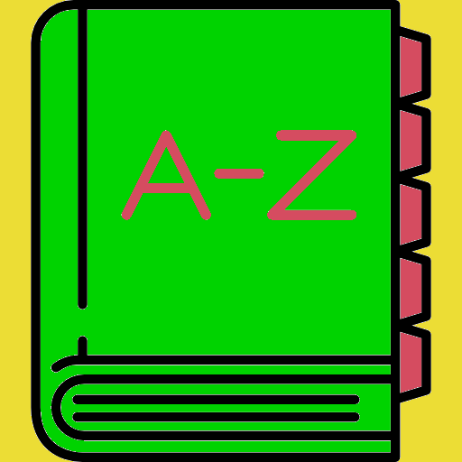
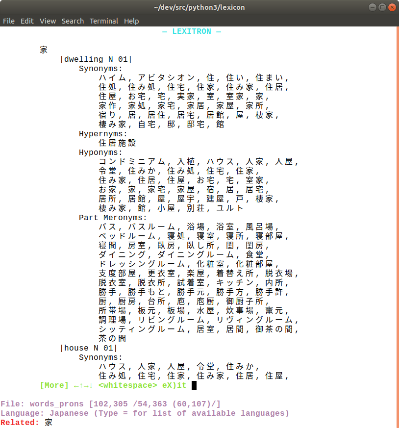
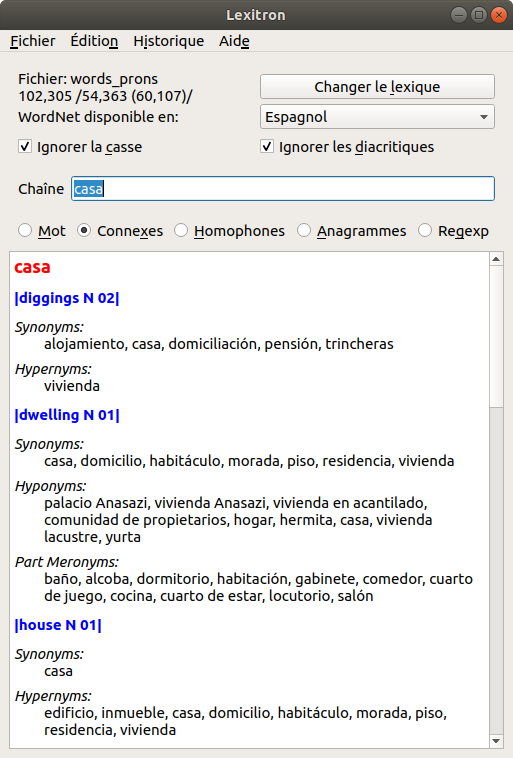

Lexitron
Introduction
Lexitron uses an external lexicon file and/or the resources of WordNet to check for definitions, related words, pronunciations, homophones, anagrams, and regular expressions. Matches may ignore case and/or diacritics. Queries can be submitted on the command line or interactively via a dumb console, smart terminal, or fully graphical interface.
Synopsis
Lexitron can be launched from the command line, or via an icon in a graphical user interface.
By command
Usage: lexitron OPTIONS
OPTIONS:
-h | --help | print this message and exit |
-V | --version | print version information and exit |
-c | --icase BOOLEAN | ignore letter-case in matching, default: no |
-d | --idiac BOOLEAN | ignore diacritics in matching, default: no |
-l | --language LANGUAGE | use language LANGUAGE for WordNet lookups, default: English |
-f | --lexicon LEXICON-FILE | use lexicon file LEXICON-FILE for spelling and pronunciation lookups |
-i | --interface INTERFACE | use the specified kind of user interface, default: console |
-s | --style CSS-FILE | use CSS file CSS-FILE to control appearance of GUI output |
-x | --exec COMMAND | execute console-style command COMMAND and exit |
In these options, the terms in italics have the following meanings:
BOOLEAN1|0,true|false,yes|no,on|offwithout regard to caseCOMMAND- Any command accepted by the console user
interface (which use of the
-x/--execcommand implies) CSS-FILE- The path to a CSS file conforming to CSS 2.1 or later
INTERFACEconsole|terminal|graphic(or any unique prefix of one of these) without regard to case, representing respectively a dumb-console, smart-terminal or fully graphical user interfaceLANGUAGE- The name of any of the supported languages (or any unique prefix of one of these) without regard to case
LEXICON-FILE- The path to a user-supplied lexicon file containing spellings and, optionally, pronunciations
Option names are case-sensitive. Long-form option names can be abbreviated
to any unique prefix. For instance, --icase can be given as
--ic but not as --i (ambiguous with
--idiac and --interface) or as --iCase
(wrong case).
Options may be specified in a configuration file. Command-line options have precedence over configuration-file options, which in turn have precedence over built-in options.
By icon
Lexitron can be launched by activating its icon. The details — where the icon is located, whether it requires a single click or a double click, and so on — will vary from system to system. It may be that when Lexitron is launched in this way, options can only be set in the configuration file.
Prerequisites
Lexitron requires Python 3 and its standard library to run.
The graphical user interface requires PyQt5 to run.
The WordNet features — definitions, examples, and related words — require the Natural Language Toolkit (NLTK, which in turn requires at least Python 3.5), and also the WordNet corpus and lemmatizer, which can be downloaded as part of the NLTK data.
The Python import commands executed to supply these facilities are equivalent to:
from nltk.corpus import wordnet
from nltk.stem import WordNetLemmatizer
WordNet contains only lexical words (nouns, adjectives, verbs and some adverbs), and not function words. A user-supplied lexicon is required for Lexitron to recognize function words.
Pronunciations can only come from a user-supplied lexicon file. See below for further details.
It is possible to run Lexitron with neither a user-supplied lexicon nor WordNet, but in that case the only action available in either of the text-only user interfaces will be to quit. (In the graphical user interface you will also be able to load a lexicon file.)
The Configuration File
Default options can be set in a per-user configuration file, called
.lexitronrc and located in the user’s home directory.
All command-line options can be set, using their long-form option name
without the leading ‘--’ and without regard to case. The same
abbreviations that are recognized on the command line can also be used in the
configuration file.
An example configuration (but without the indentation) would be:
[DEFAULT]
Lexicon = /path/to/LexiconFile
iDiac = True
Interface = terminal
Language = Catalan
The [DEFAULT] heading is obligatory. All other lines are for
exemplification only. (Too much information on the format of the configuration
file can be had from the Python
documentation.)
The Lexicon File
The lexicon file is a plain-text list of entries encoded in UTF-8. There must be one word or phrasal entry per line. The entries must be unique but need not be sorted.
Comment lines are allowed and ignored. They begin with #.
Unix-like systems including Linux and Mac OSX have a suitable lexicon file
located at /usr/share/dict/words, and this is the built-in
default. On Windows systems, you will need to build or access a lexicon file
externally, and there is no built-in default.
Any spelling may be followed, after a <TAB> character, by
a list of possible pronunciations, each separated by a comma followed by a
space.
Substantial open-source files of pronunciations are not common. However, the CMU Pronouncing Dictionary can be freely downloaded and gives General American pronunciations for more than 134,000 words in ARPAbet transcription.
You will need to undertake a certain amount of processing to be able to use the CMU file with Lexitron: the file is encoded in ISO 8859, entries are entirely in upper case, and variants are given in separate entries. You may also prefer to use some phonetic transciption other than ARPAbet. You will need to address these issues, possibly combining with a separate wordlist that uses mixed case.
The CSS File
The CSS file is interpreted by PyQt5 rather than a browser and therefore needs to conform to the subset of CSS that PyQt5 recognizes. See the PyQt5 documentation for complete details.
The following example of a CSS file illustrates both the default style settings and all the CSS selectors that can usefully be accessed:
body {}
.headword { color: red; }
.synset { color: blue; }
.rellist {}
.relname { font-style: italic; }
.reldata {}
.words {}
Language Support
Lexitron provides two kinds of support for non-English languages: in the application’s interface, and in the languages for which WordNet data is available.
Internationalization of the application interface
Lexitron has support for internationalization (I18N) and localization (L10N)
via the gettext system. This means that, if an appropriate L10N
file is available, all prompts, menus, widget labels, messages and so on will
appear in the language of the current locale.
Depending on the operating environment, the locale language can be set by the user globally, and may be able to be set on a per-instance basis. For example, on a Unix-like system, the following command may launch Lexitron with a graphical user interface in the French-language locale:
$ LANGUAGE=fr lexitron --interface graphic
Please contact the author if you are interested in creating a localization of Lexitron.
WordNet languages
WordNet information can be retrieved in a number of languages as well as English.
WordNet internally uses ISO 639-3 three-letter codes to identify languages, but Lexitron options and interfaces display and accept natural-language names (or unique abbreviations of them). These are the languages currently available:
- Basque
- Bulgarian
- Catalan
- Croatian
- Danish
- Dutch
- English
- Finnish
- French
- Galician
- Hebrew
- Indonesian
- Italian
- Japanese
- Mandarin Chinese
- Modern Greek
- Norwegian Bokmål
- Norwegian Nynorsk
- Persian
- Polish
- Portuguese
- Slovenian
- Spanish
- Standard Arabic
- Standard Malay
- Swedish
- Taiwan Chinese
- Thai
- Tosk Albanian
WordNet-derived information is displayed under WordNet “synonym-sets” or “synsets”, which are used by WordNet internally as labels in a language-agnostic way. To emphasize their status as WordNet-internal labels, Lexitron displays synset designators within vertical bars. Thus the following entry for related words to perro (‘dog’) is displayed in one of Lexitron’s text-only user interfaces when the language is set to Spanish:
perro
|dog N 01|
Synonyms:
can perro
Hypernyms:
cánido
Hyponyms:
basenji chucho gozque mestizo grifón pug spitz
|rotter N 01|
Synonyms:
perro
Hypernyms:
antipático desagradable
WordNet has a built-in lemmatizer for English only. This means that, when the language is set to English, you can enter an inflected form such as houses or housed and see information about house as a noun and/or a verb as appropriate. The WordNet interface used by Lexitron does not perform lemmatization in any other language, so non-English words must be entered in their base or dictionary form in order to retrieve WordNet-derived information.
The Console Interface
The console interface can be used interactively (for example, over a network
connection) and is also the basis for non-interactive (possibly scripted) use
of Lexitron. All output goes to the standard output file and can therefore be
redirected in non-interactive use. Commands entered interactively must be
followed by the <Enter> or <Return>
key.
Commands are whole words which may be abbreviated to any unique prefix,
disregarding case. The command ? displays the list of available
commands, while = displays information about the current lexicon
file (number of entries, and number of pronunciations excluding and including
variants), as well as the current language for WordNet lookups. All the
remaining commands other than Available and Quit
require an argument.
The argument to the -x/--exec command-line option
may contain multiple commands separated by a semicolon (;). Also,
-x/--exec may be given multiple times. However given, Lexitron
will execute all the commands in sequence and then exit.
Terminal Interface
The terminal interface emulates a 1980s-style “smart” terminal such as the DEC VT100, with single-keystroke input and cursor-addressed output. Unlike the graphical user interface, it does not require the installation of any modules beyond those in the Python standard library.
All commands are invoked by pressing a single key. Commands other than Quit
will then prompt for an argument, which will need to be terminated by pressing
the <Enter> or <Return> key. Where the
output exceeds the available screen space, it is “paged” into smaller chunks,
each followed by a prompt which offers options to scroll up and down or
exit.
The following screenshot shows the terminal interface during a session where the application interface language is English and the WordNet lookup language is Japanese.
Graphical Interface
The graphical user interface is intended to be self-explanatory. Its exact appearance will depend on the environment in use, as well as any CSS file supplied by the user. The following is a screenshot of a typical session in the Gnome environment of a Linux-based operating system, with the French-language version of Lexitron using Spanish for WordNet lookups, and no user-specified CSS file:
Acknowledgements
With thanks to:
Contact
Please contact the author at <jasoncjohnston at gmail dot
com>.